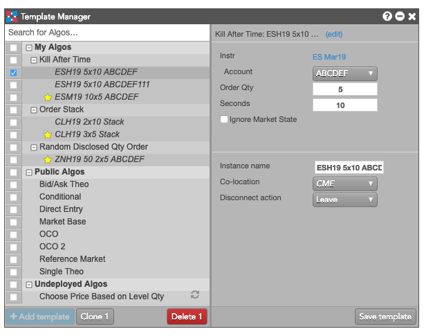
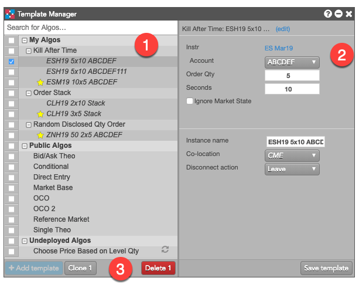

The {{wname}} widget lets you quickly create, modify and manage algo templates for your algos. You can easily add new templates for existing algos, as well as clone and modify existing templates, letting you quickly tweak templates for different strategies.

{{wname}} shows all of your deployed algos, available public algos and algos that are not currently deployed.
